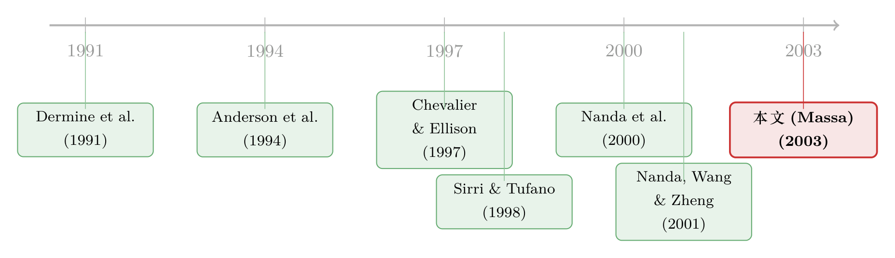

8000 只基金，只有 400 个家族：当「跑赢大盘」不再是唯一的玩法
本文读的是 Massa (2003, Journal of Financial Economics)：作者第一次把「产业结构」请进共同基金的研究里，论证基金家族并不总在拼「业绩」——它们靠多发基金、做大产品差异化这条非业绩路线来软化竞争。一个核心机制是「家族内免费换仓」这枚期权：家族越大，这枚期权越值钱，于是家族越没必要在收益上硬碰硬。实证上，产品差异化越高的品类，业绩越差、基金扩张越凶。
1 一个数字上的悖论
先看一组让人愣住的数字。
1990 到 2000 这十年间，美国共同基金的数量从 3,081 只暴涨到 8,171 只——比纽交所和美交所所有上市股票加起来还多。可与此同时，基金家族（fund family）的数量却几乎纹丝不动，只从 361 个慢慢挪到 431 个。市场被切成了大约 33 个「品类」（category）。
这是一幅很奇怪的图景：一边是基金数量的爆炸，一边是家族数量的停滞。
按标准金融学的逻辑，这件事很难讲通。一来，市面上已有的证券品种，早就足够投资者去拼出任何想要的最优组合，何须再造出几千只基金？二来——这一点更要命——把市场切成几十个品类，本身就是在给业绩添堵：品类化限制了基金经理的活动范围，逼他只能在自己品类规定的资产里腾挪，连择时（market timing）的本事都施展不开。
如果说基金是为了「替投资者赚更多」而存在，那么这种自我设限式的「品类繁殖」，简直是在和业绩过不去。
于是一个自然的问题浮出来了：如果多发基金反而妨碍业绩，家族为什么还乐此不疲？
这篇论文给出的答案，听上去近乎冒犯主流直觉：因为对家族来说，「把业绩做到最大」从来就不是唯一的、甚至不是最优的游戏。
2 真正关键的那枚期权：家族内免费换仓
要理解这个反转，得先抓住作者反复强调的一个细节——一个被以往文献整体忽略掉的细节：投资者可以在同一家族的不同基金之间，以极低甚至零成本来回切换。
这件事的制度根源在费用结构。基金投资者面对两类费用：一是申购费 (load fee)，一次性缴纳，同一家族内通常统一；二是管理费 (management fee)，逐只基金各不相同。有时还有换仓费 (switch/exchange fee)。为了堵住套利空间，家族一般会把申购费和换仓费拼成一笔「统一的入场费」，缴完之后，投资者就能在家族内部自由游走。
这就等于家族悄悄送给了投资者一枚期权：进了门，往后在家族里换来换去几乎不要钱。
关键在于，这枚期权的价值，因人而异。它取决于投资者的「投资期限」（investment horizon）——也就是他打算多久之后变现或换仓。
举个论文里的例子：一个很厌恶风险、却又笃信短期股市会涨的投资者，可以先买股票型基金，盘算着几个月后切到债券型基金。这时候他选哪只股票基金，就不只看这只基金本身，而要看家族里有没有配套的债券基金、能不能低成本切过去。
于是，两只回报完全一样、风险特征也一样的基金，可能服务着完全不同的人群——它们的吸引力，既取决于投资者自身（投资期限），也取决于家族特征（家族里还有多少只别的基金）。换仓期限短、爱倒腾组合的人，自然涌向那些「基金多、申购费低」的大家族。
这枚期权一旦存在，竞争的逻辑就变了。投资者评价一只基金时，看的是「回报 + 这枚期权的价值」。期权越值钱，基金之间在纯回报上的竞争就越松，行业的分割（segmentation）就越深。说白了，这枚期权按家族把整个行业切成了一块块自留地。
接着，一个顺理成章的推论是：既然换仓期权的价值随家族基金数 \(M\) 上升，那么多发基金本身，就成了一件能软化竞争、又能扩大市场覆盖的武器。一个家族如果发现自己的业绩远不如对手、硬拼业绩又代价高昂，它完全可以掉头去降费、或者多发基金。
这就是标题里那句话的全部分量——performance-maximization is not the only game in town：利润最大化的「费用—业绩—基金数」组合里，那个最优的业绩水平，甚至可能低到在标准业绩评价里会被判为「劣等」。
3 模型：把这套直觉写成方程
论文用一套标准的产品差异化 (product differentiation) 框架，把上面的故事变成了可检验的命题。我们一步步拆。
3.1 投资者：嵌套 Logit 需求
第 \(a\) 个投资者从第 \(i\) 个家族的第 \(m\) 只基金里获得的净效用是：
$$ U^a_{im} = r_{im} - p_i\,(1 - B_i M_i) + x^a_{im} $$
这里 \(r_{im}\) 是该基金的业绩，\(p_i\) 是家族 \(i\) 的申购费，\(x^a_{im}\) 是捕捉个人口味异质性的随机项（沿用 Anderson, De Palma & Thisse, 1994 的设定）。最妙的是中间那一项 \(p_i(1 - B_i M_i)\)：括号里的 \(B_i M_i\) 正是换仓期权带来的实际费用折扣——\(B_i\) 是每只基金为期权贡献的「单位价值」，\(M_i\) 是家族基金数。家族基金越多，投资者实际付出的费用越低。倒腾组合越勤的人，\(B_i\) 越大。
假设 \(x^a_{im}\) 服从双指数分布，需求就能写成漂亮的嵌套 Logit (nested logit) 闭式解：投资者先选家族、再在家族内选基金。设 \(f_{im} = r_{im} - p_i(1 - B_i M_i)\)，则
$$ P_{m\mid i} = \frac{\exp(f_{im}/m_2)}{\sum_{m=1}^{M_i}\exp(f_{im}/m_2)}, \qquad P_i = \frac{\exp(S_i/m_1)}{\sum_{i=1}^{I}\exp(S_i/m_1)}, \qquad S_i = m_2\ln\sum_{m=1}^{M_i}\exp(f_{im}/m_2) $$
整套需求由两个参数定调：\(m_1\) 是家族之间的异质性（inter-firm heterogeneity，投资者觉得不同家族有多不一样），\(m_2\) 是家族内部基金之间的异质性（intra-firm heterogeneity）。两者都在 0（所有基金被视为完全相同）和 1（完全不同）之间。这两个参数，后面就是实证要估的核心。
3.2 家族：多产品厂商的利润最大化
家族像一家多产品公司，同时决定发多少只基金 \(M_i\)、为业绩投入多少 \(c_{im}\)、收多少费 \(p_{im}\)，目标是利润最大化：
$$ \max_{p_{im},\,c_{im},\,M_i}\;\sum_{m_i=1}^{M_i}\big[p_{im}(1 - C_i M_i) - c_{im}\big]\,P_{im}\;-\;k_i $$
其中 \(c_{im}\) 是为达到某一业绩水平付出的成本（可理解为「研究投入」「给基金经理的业绩奖金」，或等价地「降管理费的让利」）；\(C_i\) 是家族提供换仓期权的单位成本（被换仓蚕食掉的申购费、以及横跨众多品类带来的规模经济损失）；\(k_i\) 是进入行业的固定成本。注意作者一个关键假设：新设一只基金的固定成本为零——共同基金正是一个进入壁垒极低的行业。
这里采用的是「资产最大化」式的利润观（沿用 Chevalier & Ellison, 1997）：既然投资者缴的费多按管理资产规模收取，那么利润最大化≈净募资最大化。这正是「业绩未必是目标」的微观基础。
3.3 核心方程：均衡业绩
把投资者行为和家族策略放在一起求解（推导见原文附录），可得家族 \(i\) 旗下基金的均衡业绩：
这一个方程几乎装下了全文的故事。业绩 \(r_i\) 同时由供给侧（效率 \(A_i\)、期权成本 \(C_i\)、期权价值 \(B_i\)、进入成本 \(k_i\)）和需求侧（异质性 \(m_1, m_2\)）决定。逐项读下来直觉很清楚：
- 投资者越看重换仓期权（\(B_i\) 越大），家族越不必投资于业绩；
- 反过来，提供期权的成本 \(C_i\) 越高，家族越会回头专注业绩；
- 业绩与家族内异质性 \(m_2\) 正相关、与家族间异质性 \(m_1\) 负相关——若家族之间被视为差别很大（\(m_1\) 高），需求曲线陡峭，不靠业绩也能拉客，做业绩的动力就垮了。
3.4 从方程到可检验命题
把上式重写，可以引出一个产品差异化指数 (index of product differentiation) \(G\)——它度量一个品类内各基金在「服务」（费用、业绩）上的离散程度。逻辑和一切差异化市场一模一样：厂商越能把自己做得「不一样」，越不必在价格（这里是业绩）上肉搏。于是有了全文两条最干净的可检验约束：
$$ \frac{\partial r_i}{\partial G} < 0 \qquad\text{and}\qquad \frac{\partial M_i}{\partial G} > 0 $$
翻成大白话：差异化越高的地方，业绩越低、基金繁殖越快。因为如果多发基金是替代业绩的拉客手段，那它就该恰恰出现在业绩最差的那些角落。
4 识别：先估需求，再查两条关系
数据来自 CRSP Mutual Fund 文件，辅以 Morningstar 补齐缺失的品类代码。样本期 1992–2000，按 ICDI 投资目标码（ICDI OBJ）划分品类。原始 18,616 只基金中，1993–2000 间出现过的有 17,688 只，落在 24 个品类里；剔除 388 只指数基金（性质特殊）和只有一只基金的「期权收益」品类。观测同时在基金与品类两个层面、月度与年度两种频率上展开。
识别分两步走，环环相扣：
第一步，估需求。用 Berry (1994) 与 Berry, Levinsohn & Pakes (1995) 那套离散选择 (discrete choice) 方法，把嵌套 Logit 需求落到数据上，估出 \(m_1\)（家族间异质性）与 \(m_2\)（家族内异质性）。这一步本身就要回答两个前置问题：投资期限是否真的影响了投资者的选择？是否存在「家族驱动的市场分割」？作者的回答是肯定的——期限更短、更善变的投资者，确实更偏好「申购费低、隶属大家族」的基金；而且需求里存在明显的家族驱动异质性，家族归属在切分市场中扮演了主角。这正是模型的事实地基。
第二步，查两条关系。业绩/差异化、繁殖/差异化这两条关系是动态面板，作者用 Arellano & Bond (1991) 一系的动态面板 GMM 来处理滞后因变量带来的内生性。结论与模型预言一致：
- 业绩与产品差异化之间，存在强且统计显著的负相关——而且这种负相关不仅在基金层面成立，在品类层面同样成立：差异化更高（竞争更弱）的品类，系统性地提供更低的业绩。
- 基金繁殖、品类繁殖与差异化之间正相关：差异化越强的品类，新基金的创设和基金换手都更活跃。家族会专挑那些差异化高的品类去「铺货」。
我手头的论文正文在描述性统计（表 1）之后被截断，回归系数与 t 值无法逐一核对，因此上面只忠实转述作者明确写下的「符号与显著性」，不替它编造任何具体数字。读者若要引用点估计，请回原文第 6–8 节。
5 文献脉络
把这篇论文放回它生长的那条线上，会看得更清楚。
最早试图给共同基金行业建模的，是 Dermine, Neven & Thisse (1991)——他们让基金和别的原始资产一道，落在投资组合前沿上。之后这条线分叉成两股：一股从产业组织入手，Massa (1998) 自己的工作稿就主张「市场分割与基金繁殖是家族用来榨取投资者异质性的营销策略」，本文正是它的正式化与实证化；Nanda, Narayanan & Warther (2000, JFE) 让管理费与申购费在竞争中内生地决定；Mamaysky & Spiegel (2001) 则从第一性原理推出基金存在的均衡理由——满足投资者的对冲需求。

另一股从家族层面的实证切入：Khorana & Servaes (1999, 2000) 系统识别了家族何时新设基金（规模经济、范围经济、过往业绩等）；Sirri & Tufano (1998, JF) 揭示了「成本高昂的搜寻」如何塑造资金流；Chevalier & Ellison (1997, JPE) 给出了基金的风险承担激励。而最贴近本文的「家族外部性」直觉，要数 Nanda, Wang & Zheng (2001) 的「明星效应」——一只明星基金会给整个家族带来溢出（关于这一点，可参见《一只基金的命运，藏在它「兄弟姐妹」的成绩单里》）。
本文的位置因此很清晰：它是第一篇把「市场结构」与「家族策略」直接对接、并第一个去问「业绩与市场结构有何关系」的工作。它借来的工具，是 Anderson, De Palma & Thisse (1994) 的产品差异化离散选择理论，加上 Berry-Levinsohn-Pakes 的需求估计。沿着这条线往后看，基金家族作为一个「战略整体」的视角已成为主流（可参见《新基金买的，正是你手里那批股票》、《当「对手」就坐在自家屋檐下》 与《替留下的人作证：基金家族为什么非得「炒掉」几个经理》）。
6 评论与延伸（Q&A + 研究方向）
(a) 几个可能的疑问
Q：这和「明星效应」（star phenomenon）到底有什么不一样？
明星效应讲的是「正溢出」——一只跑赢的基金给整个家族引流，所以家族多发基金是为了多买几张彩票。本文讲的是「软化竞争」——家族多发基金、做大差异化是为了不必拼业绩。前者把繁殖当成博取高业绩的手段，后者把繁殖当成高业绩的替代品。两者机制相反，却都能解释「家族为什么爱多发基金」，因此严格说它们是互补而非互斥的故事。
Q：「换仓期权降低实际费用」这个核心假设，可信吗？
它有制度基础：同一家族内的转换确实常常免费或近乎免费，而申购费按家族统一收取。论文也给了需求侧的旁证——短期限投资者确实更扎堆在低申购费的大家族。薄弱处在于，作者并没有直接观测到每个投资者的「投资期限」，而是用基金特征（申购费、家族规模）去反推，这让因果链条带了点循环论证的味道。
Q：「业绩和差异化负相关」会不会只是反过来——业绩差的品类自然显得更分散？
这正是最大的识别隐忧。业绩离散度本身就是差异化指数 \(G\) 的一个构成成分，当 \(G\) 用业绩相关特征构造时，\(r\) 与 \(G\) 的负相关有机械关联之嫌。作者的部分回应是：用纯非业绩特征（费用离散度）单独构造一版 \(G\)，关系依然成立——这把「机械相关」的解释削弱了不少，但没有彻底排除。
Q：动态面板 GMM 真能解决内生性吗？
它处理的是滞后因变量与固定效应造成的偏误（Arellano-Bond 那类问题），用滞后值作工具。但它解决不了「差异化与业绩同时由某个遗漏的品类特征驱动」这种联立性。换句话说，它清掉的是统计上的动态偏误，不是经济上的反向因果。
Q：这是不是在说「基金行业是个低效的卡特尔」？
不完全是。论文的规范含义更微妙：在投资者异质、且看重非业绩服务（如换仓灵活性）的世界里，低业绩的均衡可以是家族理性的、利润最大化的选择，未必意味着合谋。对投资者的福利影响是模糊的——你少赚了业绩，但买到了灵活性。这恰恰是它比「基金都在坑人」更有意思的地方。
Q：结论对今天还成立吗？样本是 1990 年代。
1990 年代正是基金数量爆炸、家族化加速的窗口，机制最纯。今天被动化、零申购费平台（如免佣转换、ETF）大行其道，"换仓期权"的家族专属性被大幅稀释——这反而提供了一个绝佳的外生冲击来重新检验本文机制（见下）。
(b) 几个可能的研究问题与提案
1. 零佣金平台如何瓦解了「家族换仓期权」？
【经济故事】本文的机制完全建立在「家族内换仓便宜、跨家族换仓贵」这一费用楔子上。Schwab、Fidelity 等开放平台和零申购费的兴起，把这个楔子几乎抹平了——投资者跨家族切换也几乎免费。那么模型预言：换仓期权的家族专属价值 \(B_i\) 坍塌后，家族繁殖基金、做大差异化的动力应当减弱，业绩竞争应当回归。 【可行性】中高。CRSP + Morningstar 数据齐全，平台上线时间可作为交错冲击，用交错 DiD 识别。难点是干净地度量"换仓成本"的下降时点。
2. 把这套「非业绩竞争」逻辑搬到公司债基金 / 信用市场。
【经济故事】公司债基金的「业绩」高度依赖流动性与持仓久期，而家族层面的产品线（投资级、高收益、短久期……）天然适合"换仓期权"叙事。在赎回压力下，家族内部的腾挪是否替代了对单只基金业绩的投入？这把本文与债基的脆弱性文献接上了。 【可行性】中。需要 CRSP 债基数据 + 持仓明细（如 eMAXX / Morningstar holdings），识别上可借危机期（如 2020 年 3 月）的赎回冲击。诚实地说，债基业绩归因比股基更难，是主要障碍。
3. 外资持有人会改变家族的差异化策略吗？
【经济故事】外资投资者的投资期限分布、对换仓灵活性的估值可能系统性不同于本土投资者。若一个家族的客户基础里外资占比上升，模型中的 \(m_1, m_2, B_i\) 都会移动，进而改变它的繁殖与业绩选择。这把基金产业组织与外资持有人文献勾连起来。 【可行性】低到中。难在测准基金层面的外资持有人结构（多数美国共同基金不披露投资者国籍），可能要借跨境注册基金（如 UCITS）或 13F 的间接代理。
4. 用结构估计把 \(B_i\)（换仓期权价值）真正「解」出来。
【经济故事】本文把 \(B_i\) 当作模型参数，但从未直接观测它。如果能拿到家族内转换的微观交易记录（401(k) 计划、平台账户），就能把换仓频率映射回 \(B_i\)，从而对模型做一次真正的结构检验，而非只看符号。 【可行性】中。关键是数据——退休账户或经纪平台的内部换仓流水可遇不可求，但一旦拿到，识别力极强。
7 我的判断
这篇论文最大的贡献，是把一个被资产定价视角长期遮蔽的事实推到台前：基金行业的形态，是产业组织问题，不只是业绩问题。"performance-maximization is not the only game in town" 这句话本身就值一篇 JFE——它逼着我们重新理解"基金跑输大盘"这件事：那未必是无能，可能是家族在费用、灵活性、产品线之间精算后的均衡。把离散选择需求估计引入基金研究，也为后来一大批"家族作为战略整体"的工作铺了路。
但识别上的担忧是真实的。其一，差异化指数 \(G\) 与业绩 \(r\) 在构造上存在机械关联，作者用"纯非业绩版 \(G\)"来缓解，却没能彻底切断；其二，全文的因果叙事依赖一个未被直接观测的对象——投资者的"投资期限"和换仓期权价值 \(B_i\)，它们是被基金特征反推出来的，循环论证的风险始终悬在那里；其三，动态面板 GMM 处理的是动态偏误，而非"差异化与业绩被同一个遗漏品类特征同时驱动"这种联立性。
我最想看到的后续，是一次干净的外生冲击来给这套机制做硬检验——零佣金、免费跨家族转换的普及，恰好把本文赖以成立的"换仓期权家族专属性"打掉了一大半。如果 Massa 的机制为真，那么这个冲击之后，基金繁殖应当降温、业绩竞争应当回归。这是一个二十年后才出现的、近乎完美的"反事实"。
参考文献
- Anderson, S.P., De Palma, A., Thisse, J. (1994). Discrete Choice Theory of Product Differentiation. The MIT Press, Cambridge, MA.
- Arellano, M., Bond, S.R. (1991). Some tests of specification for panel data: Monte Carlo evidence and an application to employment equations. Review of Economic Studies 58, 277–297.
- Berry, S. (1994). Estimating discrete choice models of product differentiation. Rand Journal of Economics 25, 242–261.
- Berry, S., Levinsohn, J., Pakes, A. (1995). Automobile prices in market equilibrium. Econometrica 65, 841–890.
- Chevalier, J., Ellison, G. (1997). Risk taking by mutual funds as a response to incentives. Journal of Political Economy 105, 1167–1200.
- Dermine, J., Neven, D., Thisse, J.F. (1991). Towards an equilibrium model of the mutual funds industry. Journal of Banking and Finance 15, 485–499.
- Khorana, A., Servaes, H. (1999). The determinants of mutual fund starts. The Review of Financial Studies 12, 1043–1074.
- Mamaysky, H., Spiegel, M. (2001). A theory of mutual funds: optimal fund objectives and industry organization. Working paper, Yale School of Management.
- Massa, M. (1998). Are there too many mutual funds? Mutual fund families, market segmentation and financial performance. Working paper.
- Massa, M. (2003). How do family strategies affect fund performance? When performance-maximization is not the only game in town. Journal of Financial Economics 67(2), 249–304.
- Nanda, V., Narayanan, M.P., Warther, V.A. (2000). Liquidity, investment ability and mutual fund structure. Journal of Financial Economics 57, 417–443.
- Nanda, V., Wang, Z., Zheng, L. (2001). Family values and the star phenomenon. Working paper, University of Michigan.
- Sirri, R.E., Tufano, P. (1998). Costly search and mutual fund flows. Journal of Finance 53, 1589–1622.
- Zheng, L. (1999). Is money smart? A study of mutual fund investors' selection ability. Journal of Finance 54, 901–933.